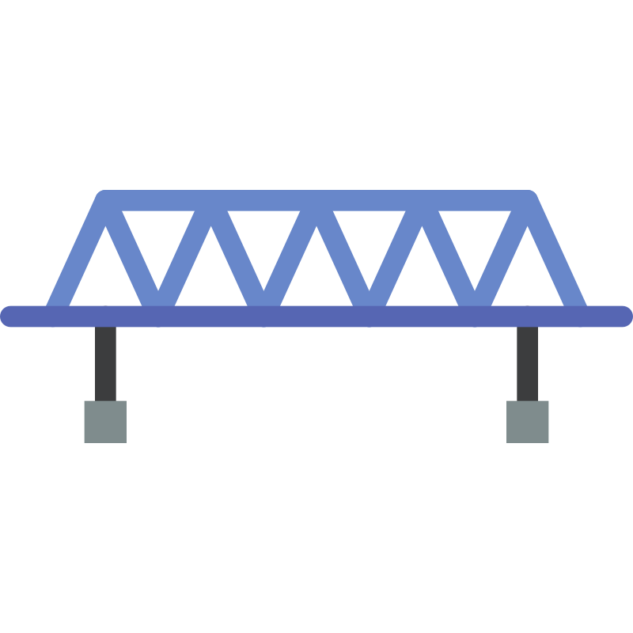

Speed, Time and Distance
A train
160 m
long crosses a bridge
200 m
long in
18 seconds
. Find the speed of the train.
Q
160 m
18 s to cross

200 m
Total distance = Train + Bridge
Given
Train length =
160 m
Bridge length =
200 m
Time =
18 s
A train
160 m
long crosses a bridge
200 m
long in
18 s
. Find the speed of the train.
160 m · 200 m · 18 s
Step 1
Total Distance = Train + Bridge
160
+
200
=
360 m
Step 2
Speed =
Distance
Time
360
18
=
20 m/s
(convert to km/hr next)
Step 3
Speed (km/hr) = Speed (m/s) ×
18/5
20
×
18
5
=
72 km/hr
G
Train length =
160 m
Bridge length =
200 m
Time =
18 s
1
160 + 200
=
360 m
2
Speed =
360
18
=
20 m/s
3
20 × 18/5
=
72 km/hr
A
66 km/hr
B
78 km/hr
C
72 km/hr
D
60 km/hr